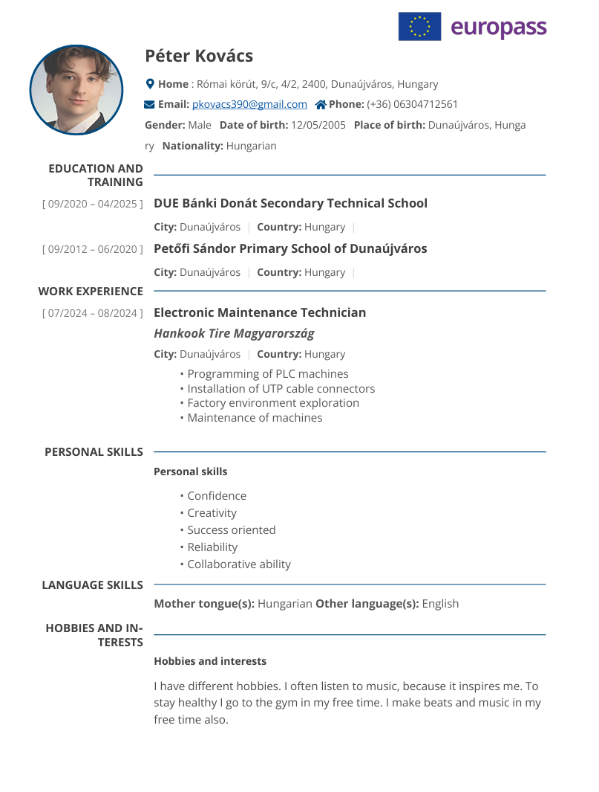
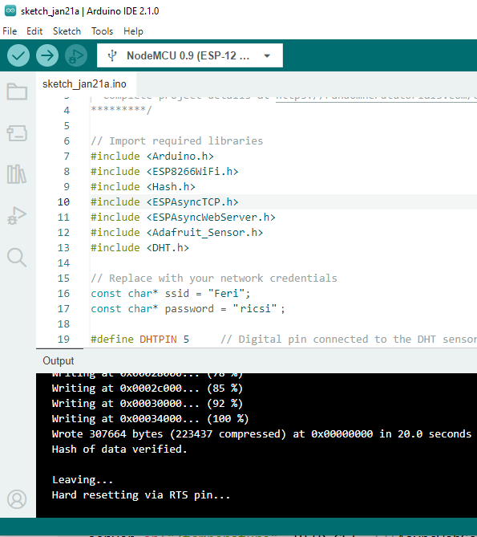
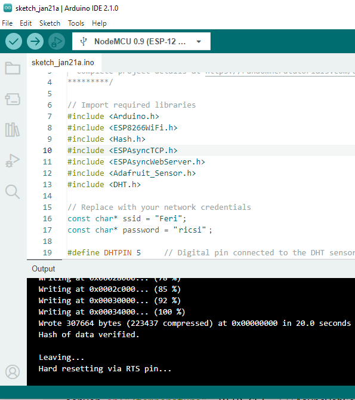
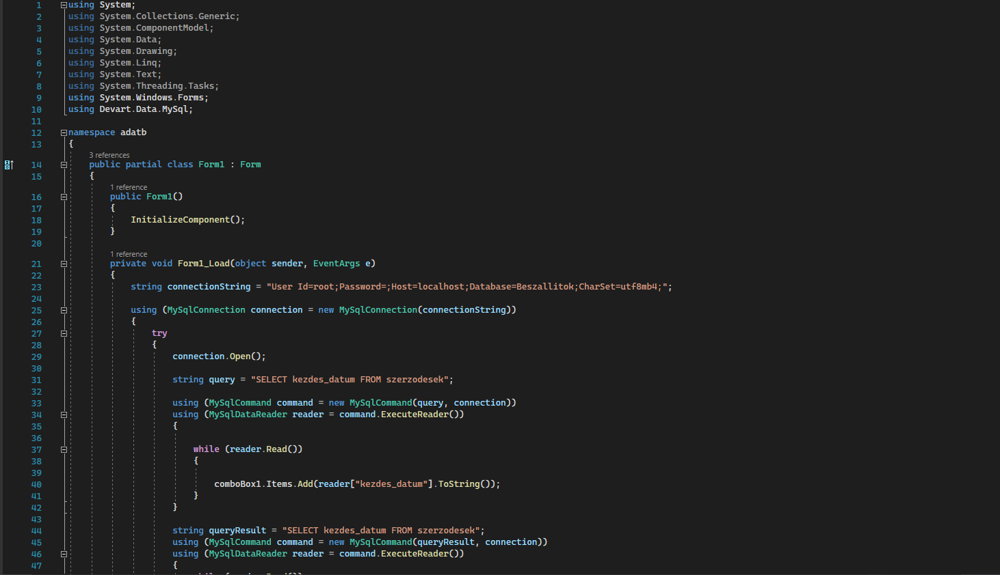
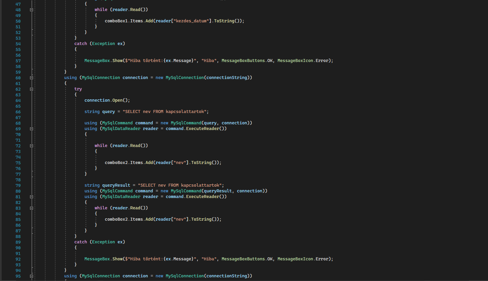
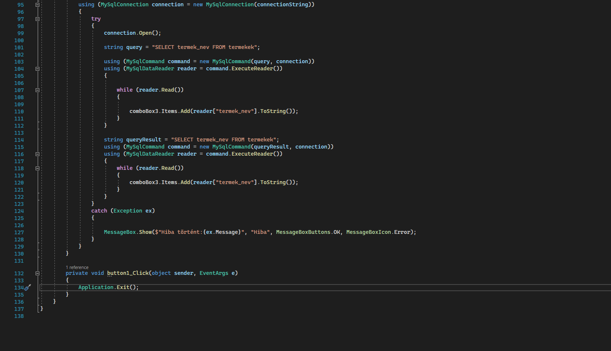
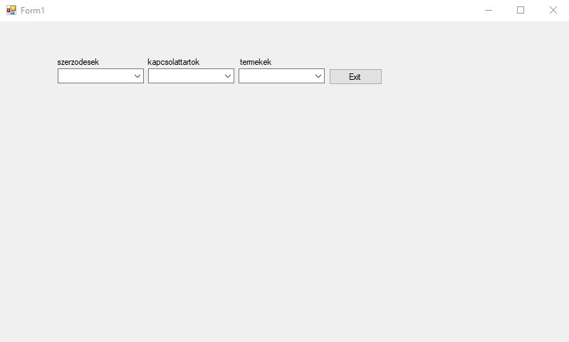
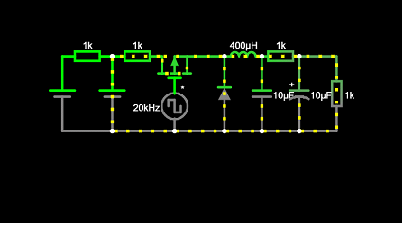

1. félév
Munkavállalói idegen nyelv
A Munkavállalói idegen nyelv tantárgy során fejlődtem a szakmai nyelvhasználatban és a kommunikációs készségeimben, különösen a munkahelyi környezetre jellemző szókincs terén. A tantárgy segített abban, hogy magabiztosabban tudjam kifejezni magam idegen nyelven a munkahelyi helyzetekben, és jobban megértsem a nemzetközi környezetben való együttműködést. Összességében a tantárgy hozzájárult a munkaerőpiaci versenyképességem javításához és a nyelvtudásom bővítéséhez.
IoT
 

Az IoT (Internet of Things) tantárgy során mélyebb megértést nyertem az internetes eszközök és rendszerek működéséről, valamint azok integrációjáról a valós világban. A tantárgy segített abban, hogy rálátást nyerjek az IoT technológiák alkalmazási lehetőségeire és kihívásaira, amelyek a jövő munkahelyein fontos szerepet kapnak.
2. félév
Programfejlesztés
   A programfejlesztés tantárgy során elmélyítettem a programozási alapelveket és a szoftverfejlesztés különböző fázisait. A tantárgy segített abban, hogy magabiztosabbá váljak a kódolásban és a problémamegoldásban, miközben fejlesztési projekteken dolgoztam.
Robottechnika CAD/CAM
A Robottechnika CAD/CAM tantárgy során alaposan megismerkedtem a robotika és a számítógépes tervezés eszközeivel, amelyek kulcsfontosságúak a robotok fejlesztésében. A tantárgy segített abban, hogy jobban megértsem a robotikai rendszerek tervezési és gyártási folyamatait, valamint alkalmazzam a CAD és CAM szoftvereket valós projektekben.